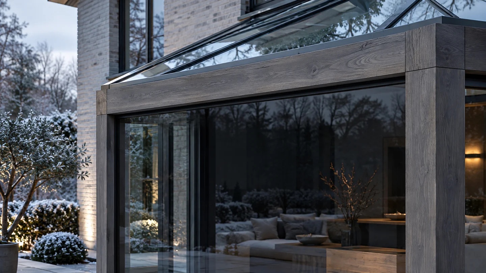
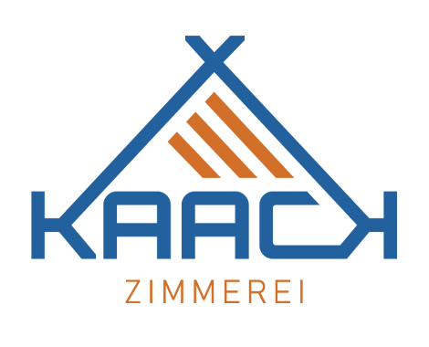
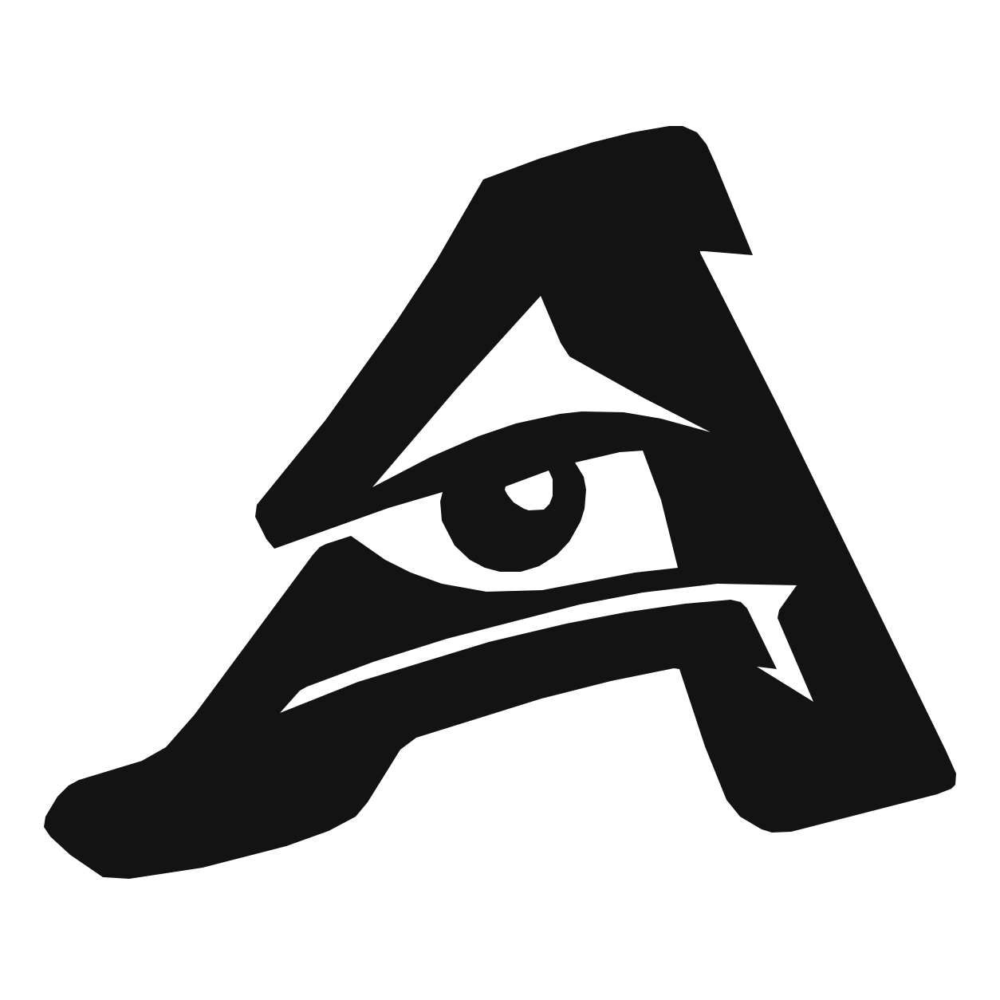
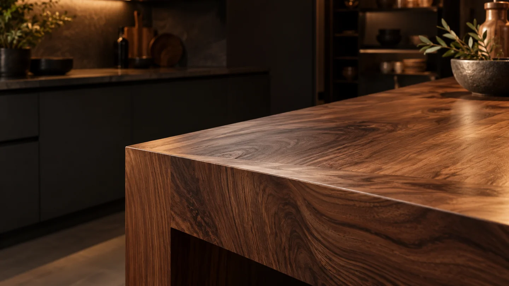
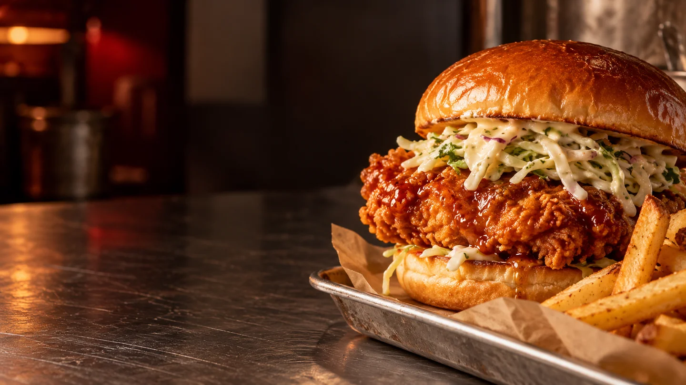
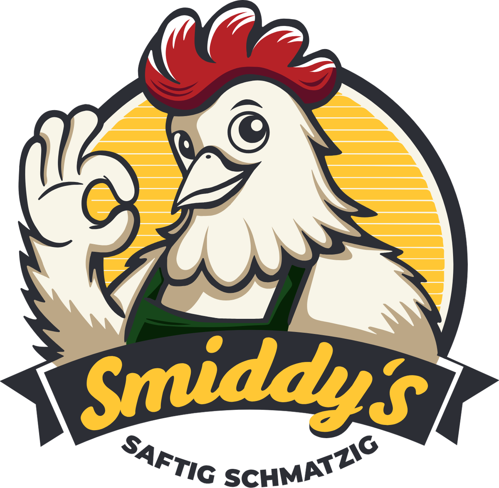
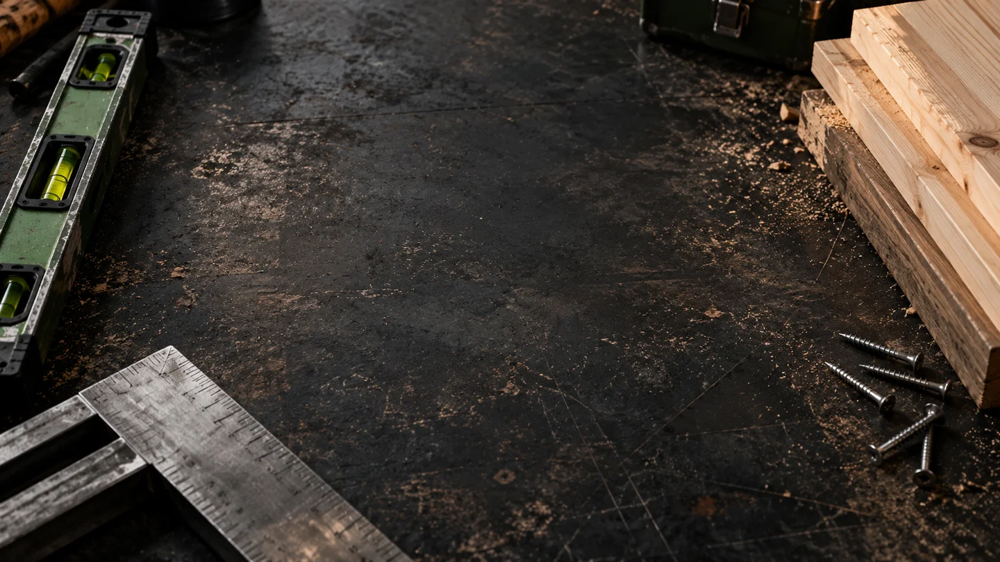
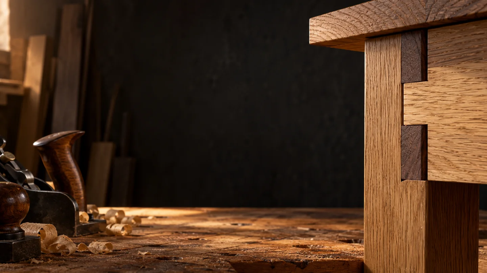

AR.DESIGN Projekt anfragenWebdesign & Grafikdesign · Schleswig
Ich bin Adrian Richter, Mediengestalter aus Schleswig. Ich entwickle Websites, Logos und Printdesign für Unternehmen, Handwerk und Gastronomie — vom ersten Entwurf bis zum fertigen Auftritt.
Ausgewählte Arbeiten
Jedes Projekt bekommt seinen eigenen Charakter — und ein System, das auch im Alltag funktioniert.











Originale Logoarbeiten · ergänzende Bildinszenierungen mit KI
Was ich mache
Kein Baukasten-Look. Ich entwickle Gestaltung, die zu deinem Unternehmen passt und auf Website, Papier und im Raum konsistent bleibt.
Mein Standort ist Schleswig. Ich begleite Unternehmen aus Schleswig und Umgebung sowie aus Flensburg, Rendsburg, Kiel und Lübeck bei Webdesign, Logoentwicklung und Printgestaltung. Die Abstimmung läuft direkt mit mir — telefonisch, per E-Mail und digital.
Ein eigener Auftritt für dein Unternehmen: Logoentwicklung, passende Farben und Typografie. Ein Corporate Design, das auf der Website, auf Visitenkarten und auf Werbemitteln zusammenpasst.
Du möchtest eine Internetseite erstellen lassen oder deine bestehende Website erneuern? Ich übernehme Konzeption, Gestaltung und Umsetzung — übersichtlich aufgebaut und für Smartphone, Tablet und Desktop gestaltet.
Flyer, Visitenkarten, Broschüren, Magazine und Plakate: Ich bringe Inhalte in eine klare Form und liefere druckfertige Daten. Von der einzelnen Geschäftsausstattung bis zum umfangreichen Editorial Design.
Gestaltung für T-Shirts, Hoodies, Beschriftungen und große Werbeformate. Damit dein Unternehmensauftritt auch auf Kleidung, Schildern und im Raum wiedererkennbar bleibt.
„Gutes Design sieht nicht nur gut aus. Es macht die richtige Idee verständlich.“
Adrian Richter
Seit meinen ersten Websites begeistern mich die Möglichkeiten, die aus Technik und Gestaltung entstehen. Seit 2015 arbeite ich selbstständig. 2019 habe ich meine Ausbildung zum Mediengestalter Digital & Print mit Schwerpunkt Editorial Design und Corporate Identity abgeschlossen.
Ich höre genau hin, denke lösungsorientiert und begleite Projekte persönlich — von der ersten Skizze bis zum fertigen Ergebnis.
Lass uns loslegen